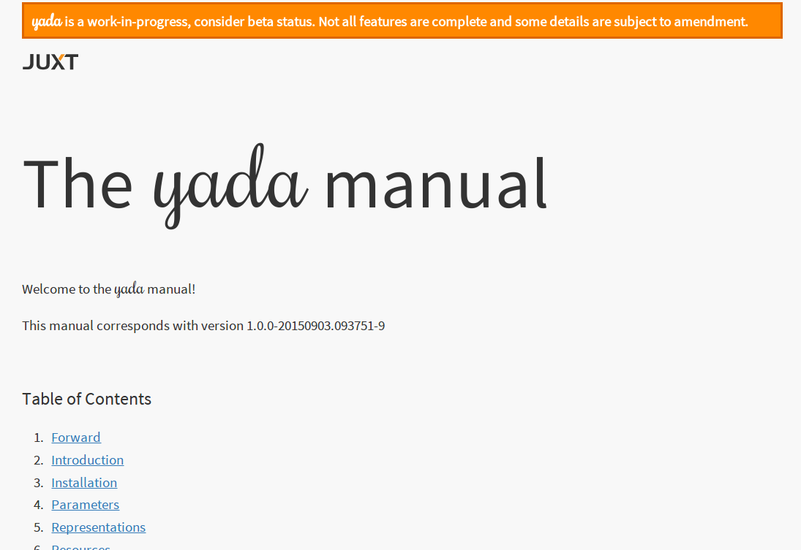

Introduction to yada
Malcolm Sparks
@malcolmsparks
Opening
HTTP
- scaleability
- flexability
- longevity
- stability
HTTP services in Clojure: Ring
Ring loves Data!
(def request
{:server-port 443,
:server-name "www.google.com",
:remote-addr "218.29.32.10",
:uri "/",
:query-string "q=yada",
:scheme :https,
:request-method :get,
:headers {"host" "www.google.com"}})
(def response
{:status 200
:headers {"content-type" "text/plain;charset=utf-8"}
:body "Hello World!"})
But… Ring middleware?
(def api
(-> routes
wrap-keyword-params
wrap-params
wrap-head
wrap-not-modified
wrap-json-response))
Is Ring middleware suitable for building HTTP services?
You're all doing it wrong
Example A: wrap-head
4.3.2. HEAD
"This method can be used for obtaining metadata about the selected representation without transferring the representation data and is often used for testing hypertext links for validity, accessibility, and recent modification."
― RFC 7231
Example A: wrap-head
(defn head-request
"Turns a HEAD request into a GET."
{:added "1.2"}
[request]
(if (= :head (:request-method request))
(assoc request :request-method :get)
request))
(defn head-response
"Returns a nil body if original request was a HEAD."
{:added "1.2"}
[response request]
(if (and response (= :head (:request-method request)))
(assoc response :body nil)
response))
Example B: Compojure routing
(routes
(GET "/hello" [] (fn [req] "Hello World!"))
(POST "/hello" [] (fn [req] (launch-missiles!))))
- Q. Which HTTP status do we get from this Ring handler if we send a
PUTrequest to/hello? - Q. Which HTTP status should we get?
Example C: wrap-modified
5.2. Conditionals
The HTTP conditional request header fields [RFC7232] allow a client to place a precondition on the state of the target resource, so that the action corresponding to the method semantics will not be applied if the precondition evaluates to false.
― RFC 7231
Example C: wrap-modified
(defn wrap-not-modified
"Middleware that returns a 304 Not Modified from the wrapped handler
if the handler response has an ETag or Last-Modified header, and the
request has a If-None-Match or If-Modified-Since header that matches
the response."
{:added "1.2"}
[handler]
(fn [request]
(-> (handler request) ; WAT?
(not-modified-response request))))
Functions vs. Data…
Arthur Dent: What happens if I press this button?
Ford Prefect: I wouldn't-
Arthur Dent: Oh.
Ford Prefect: What happened?
Arthur Dent: A sign lit up, saying 'Please do not press this button again.'
― Douglas Adams, The Original Hitchhiker Radio Scripts
Pick & Mix
Knowing what middleware to add to a Ring application, and in what order, can be difficult and prone to error. ― https://github.com/ring-clojure/ring-defaults
So is there an alternative?
(Hint: follow the data)
yada
yadaAll of HTTP (mostly)
- correctness
- completeness
- performance
DON'T PANIC!
yada is easy
yada is easyjust a function
that returns a Ring handler
(yada "Hello World!")
=> result
(yada (atom "Hello World!"))
=> result
(yada (fn [ctx] "Hello World!") {:allowed-methods #{:get}})
and so on…
["/talks/" (yada (clojure.java.io/file "talks"))]
(yada ["A" "B" "C"])
(yada {:do "a deer, a female deer"
:re "(let's stop this now)"}
(yada (new-template-resource "page.html" {:title "yada"}))
(yada (map->PostgresTable {:table "ACCOUNTS"}))
(-> "Let's go meta!" yada yada yada)
Features
Parameter coercions
(resource-properties [_]
{:parameters
{:get {:path {"dept" String}
:query {"order" #{:asc :desc}}}
:post {:path {"dept" String}
:form {"id" Long
"name" String
"dob" Date}
:header {"X-Tag" java.util.UUID}}}})
Content Negotiation
- media types
- charsets
- content encodings
- languages
(resource-properties
[_]
{:representations
[{:media-type #{"text/html" "text/plain"}
:charset #{"UTF-8" "US-ASCII"}
:language #{"en" "fi"}}
{:media-type "text/html"
:charset #{"UTF-8" "Shift_JIS;q=0.9"}
:language "zh-ch"
:encoding "gzip"}]})
(resource-properties
[_]
{:representations
[{:media-type #{"application/json"
"application/json;pretty=true"
;; Just add some more
"application/edn"
"application/edn;pretty=true"}}]})
Conditional Requests
- If-Match
- If-None-Match
- If-Modified-Since
- If-Unmodified-Since
Routing
Describe your whole API in data
(def api
["/" {"hello" (yada "Hello World!" {:id :hello})
"hello-atom" (yada (atom "Hello World!"))}])
Built-in Swagger!
(def api
["/hello-api"
(yada/swaggered
{:info {:title "Hello World!" :version "1.0"
:description "Demonstrating yada + swagger"}}
["/" {"hello" (yada "Hello World!")
"hello-atom" (yada (atom "Hello World!"))}])])
(yada (atom "Hello World!"))

Swagger (behind the curtain)
(defn swaggered [info route]
(let [spec (merge info
{:paths (->> route bidi/route-seq …)})]
(->Swaggered (yada (->SwaggerSpec spec (now))) route)))
Swaggered record
(defrecord Swaggered [spec route]
bidi.bidi/Matched
(resolve-handler [this m]
(if (= (:remainder m) "/swagger.json")
(succeed this m) ; match!
(resolve-handler [route] m))) ; keep traversing!
bidi.ring/Ring
(request [_ req match-context] (spec req)))
SwaggerSpec record
(require '[ring.swagger.swagger2 :as rs])
(defrecord SwaggerSpec [spec created-at]
p/ResourceProperties
(resource-properties [_]
{:representations
[{:media-type #{"application/json"
"application/json;pretty=true"}
:charset #{"UTF-8" "UTF-16;q=0.9" "UTF-32;q=0.9"}}]
::swagger-json (rs/swagger-json spec)})
(resource-properties [_ ctx]
{:last-modified created-at :version spec})
Get
(GET [_ ctx] (-> ctx :resource-properties ::swagger-json)))
Data transformation
(def api
["/"
[["hello" (yada "Hello World!" {:id ::hello})]
["hello-atom" (yada (atom "Hello World!"))]]])
(defn add-security [api]
(clojure.walk/postwalk
(fn [handler]
(if (instance? Handler handler)
(assoc handler :authorization my-auth)
handler))
api))
And much more…
- Basic/custom authentication
- OPTIONS, HEAD, TRACE
- Interceptor chains
- Custom methods
- Prefer, Vary, Allow
- CORS
- Service availability, Retry-After
- Request validation
- Journaling, cljs debug console
- …
Async
- Built on https://github.com/ztellman/manifold
Return a future
;; 'Hello World!' is now stored in a file
(yada (fn [ctx] (read "greeting.txt")))
;; We're about to do some IO, let's return a future
(yada (fn [ctx] (future (read "greeting.txt"))))
Or a promise
;; Asynchronous GET request with callback
(let [p (promise)]
(http-kit/request
{:url "www.google.com"}
(fn [response] (deliver p response)))
p ; Return the promise!
)
Or any other deferred value
Here's a full search engine implementation!
(defrecord ClojureSearchEngine []
ResourceProperties
(resource-properties [_]
{:parameters {:get {:query {"q" String}}}})
Get
(GET [_ ctx]
(aleph.http/get
(str "https://www.google.com/q=clojure+"
(get-in ctx [:parameters "q"])))))
;; Bidi!
["/search" (yada (->SearchEngine))]
Async everywhere!
Server Sent Events
(defn hello-sse [ch]
(go-loop [t 0]
(when (>! ch (format "Hello World! (%d)" t))
(<! (timeout 100))
(recur (inc t))))
(yada ch))
["/hello-sse" (hello-sse (chan 10))]
Full documentation
yada.juxt.pro

History & Roadmap
- Started 2014-12-22
- 0.1.0 Release 2015-03-01
- 0.2.0 Release 2015-03-20
- 0.3.0 Release 2015-04-26
- 0.4.0 Release 2015-05-12
- 1.0-SNAPSHOT beta cycle started 2015-08-03
- 1.0 final slated for early 2016